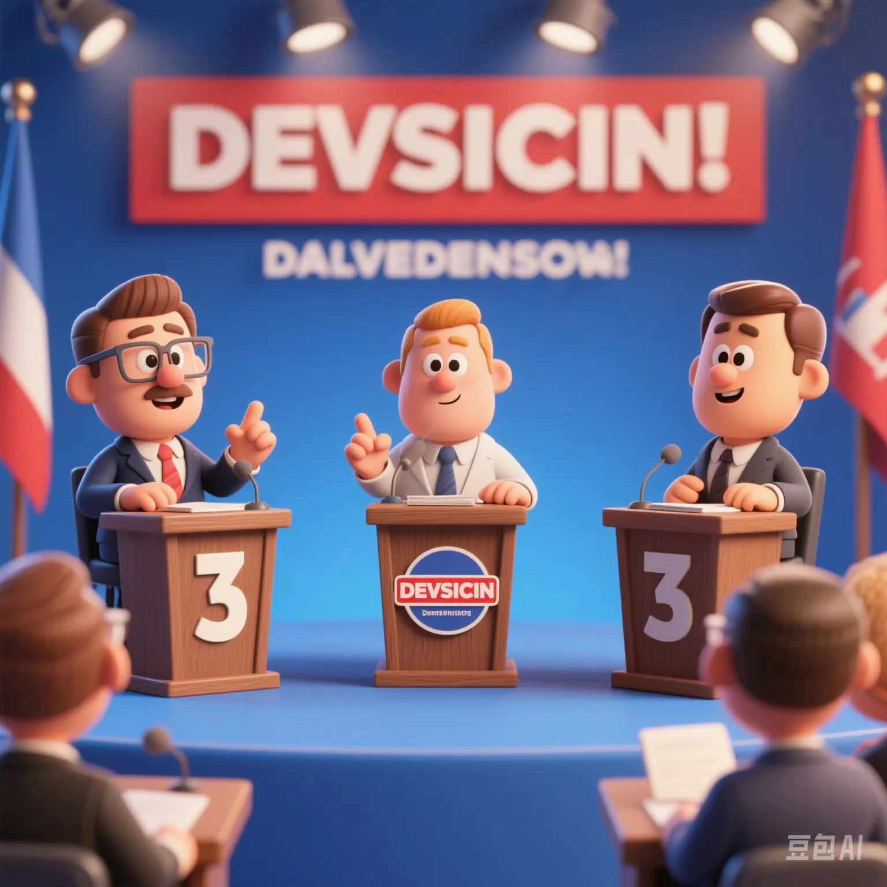

2025 Global Big Data on Moral Anxiety: Do We Still Know Right from Wrong?
PeaceLove.Top Insights :2025-04-17
💭 Moral Anxiety: Do We Still Know Right from Wrong?
Since the 21st century, with the rapid development of technology and the drastic social changes, the phenomenon of moral anxiety has become more and more serious globally. In the ever - changing social transformation, people have unprecedented confusion and anxiety about 'what is right and what is wrong'. This moral anxiety is not only evident in daily life but also more prominent in the fields of politics, culture, and ethics.
In 2025, big data and global surveys revealed a startling fact: more and more people are confused when facing complex moral choices. The global moral - anxiety index is constantly rising. Traditional moral standards are gradually losing their stability, while new moral boundaries are full of controversies.
📊 Global Distribution of the Moral - Anxiety Index
According to the 2025 Global Moral - Anxiety Report, there are significant differences in the ambiguity and confusion of moral standards among people in different countries. By analyzing the global distribution of the moral - anxiety index, we obtained the following data:
| Country/Region | Moral - Anxiety Index (0 - 100) | Main Sources of Anxiety | Affected Groups |
|---|---|---|---|
| USA | 85 | Privacy leakage, technology ethics | Youth, technology practitioners |
| China | 78 | Social fairness, family ethics | Middle - aged people, young parents |
| India | 74 | Religious conflicts, gender discrimination | Women, minorities |
| Brazil | 72 | Social injustice, wealth gap | Low - income groups |
| Germany | 68 | Environmental protection, immigration issues | Environmentalists, immigrant families |
| Japan | 60 | Aging, moral - concept updates | Middle - aged and elderly people |
In the USA, with the popularity of social media, privacy leakage has become a widespread concern, especially in the technology field.
In China, social fairness issues and family - ethics conflicts have become sources of anxiety, especially among young parents.
In India, gender discrimination and religious conflicts remain major social problems, triggering extensive moral anxiety.
🤔 Why Is Moral Anxiety Closely Related to Our Lives?
With the advent of the information age, social contradictions and ethical conflicts have become more complex, and traditional moral concepts are facing unprecedented challenges. In daily life, more and more people are confused when encountering moral choices, and even 'choice phobia' has become a common phenomenon.
Causes of Moral Anxiety
- Technological progress and moral conflicts: New technologies such as AI, gene editing, and virtual reality are developing rapidly, but they also bring a large number of ethical dilemmas. People cannot adapt to the changes brought by these new technologies in a timely manner, resulting in anxiety in moral judgment.
- Globalization and cultural conflicts: With the advancement of globalization, cultural collisions and value - differences have made moral standards in different countries and regions no longer unified. This makes people feel more confused and uncertain when facing cross - cultural moral choices.
- Social transformation and the impact on traditional concepts: In a rapidly changing society, traditional moral concepts are constantly being challenged. For example, topics such as gender equality, marriage freedom, and homosexual rights are all ethical dilemmas that people cannot easily judge.
🌍 Global Hot - Topics of Moral Anxiety: The Most Concerned Moral Issues
According to the 2025 Global Moral - Anxiety Survey, the following are the most concerned moral issues and their impacts:
| Issue | Anxiety Level (0 - 100) | Attention Level (Global Survey) | Affected Groups |
|---|---|---|---|
| AI ethics and privacy issues | 90 | Highly concerned | Technology practitioners, youth |
| Environmental protection and climate change | 88 | Highly concerned | Environmentalists, youth |
| Gender equality and social fairness | 82 | Moderately concerned | Women, minorities |
| Gene editing and human destiny | 79 | Moderately concerned | Scientists, ethicists |
| Digital currency and financial ethics | 75 | Moderately concerned | Investors, financial practitioners |
| Immigration and refugee rights | 70 | Moderately concerned | Immigrants, social activists |
AI ethics and privacy issues: With the continuous development of AI, privacy leakage and data abuse have become one of the most concerned ethical issues.
Environmental protection and climate change: Climate change and environmental problems are intensifying globally, triggering extensive moral anxiety, especially among the younger generation.
Gender equality and social fairness: Differences in gender, race, and social class still remain core issues of moral anxiety, especially in developing countries.
🧠 How to Deal with Moral Anxiety?
As global moral anxiety rises, individuals and society need to think more deeply about how to deal with these complex ethical issues. Here are some ways to deal with moral anxiety:
Advice on Dealing with Moral Anxiety
- Strengthen moral education and awareness: The education system should strengthen the setting of moral and ethical courses to help students develop correct values and ethical judgment abilities.
- Enhance cross - cultural understanding and tolerance: With the advancement of globalization, strengthening understanding and respect among different cultures is an effective way to relieve moral anxiety.
- Guide the formulation and standardization of technology ethics: Technology companies should assume more social responsibilities and formulate strict ethical standards to ensure that technological development does not harm social ethics and individual privacy.
🏁 Conclusion: Can We Solve Moral Anxiety?
In the context of globalization and technological progress, moral anxiety has become a global problem that cannot be ignored. Do we still know what is 'right' and what is 'wrong'? With the continuous changes in values and ethical standards, the answer to this question may not be simple.
However, as we can see from the global survey, despite facing numerous moral dilemmas, human society is still groping forward. Moral education, cross - cultural communication, and the improvement of technology ethics will all be important paths to solve moral anxiety in the future.